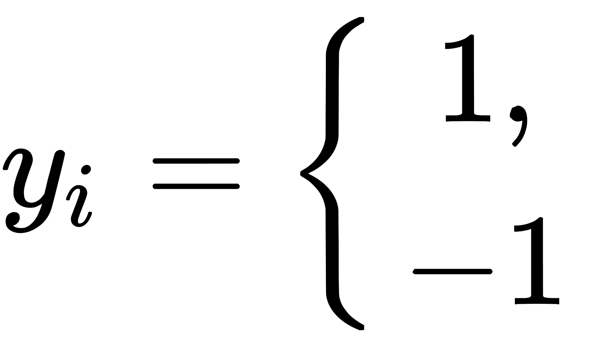
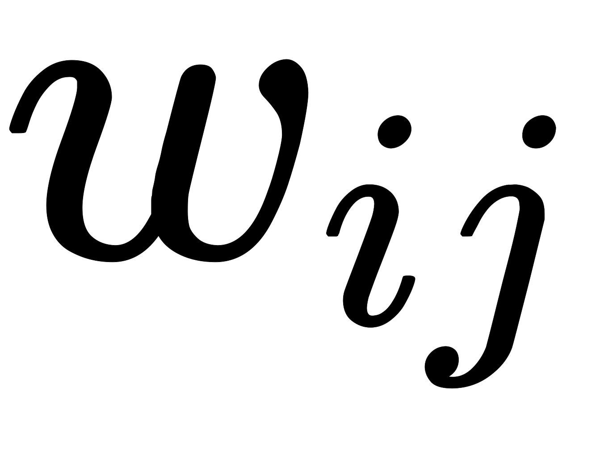
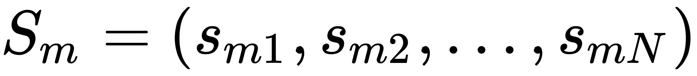
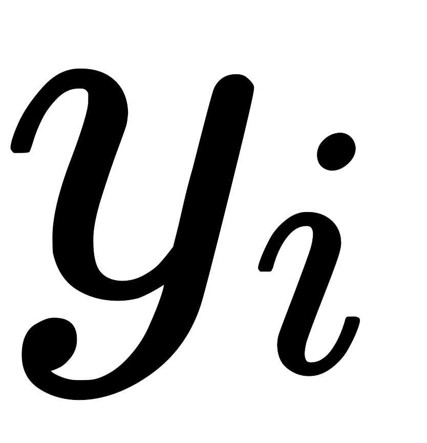
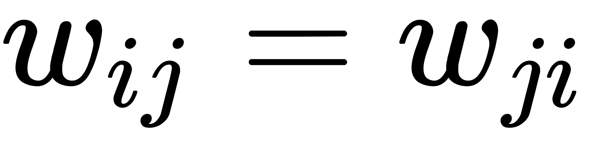
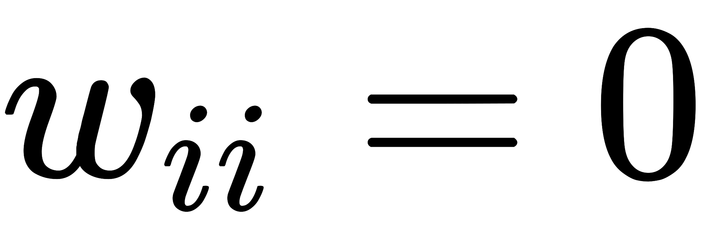

Перцептро́н, или персептрон (англ. perceptron от лат. perceptio — восприятие; нем. Perzeptron) — математическая или компьютерная модель восприятия информации мозгом (кибернетическая модель мозга), предложенная Фрэнком Розенблаттом в 1957 году и впервые реализованная в виде электронной машины «Марк-1» в 1960 году. Перцептрон стал одной из первых моделей нейросетей, а «Марк-1» — первым в мире нейрокомпьютером.
Перцептрон состоит из трёх типов элементов, а именно: поступающие от датчиков сигналы передаются ассоциативным элементам, а затем реагирующим элементам. Таким образом, перцептроны позволяют создать набор «ассоциаций» между входными стимулами и необходимой реакцией на выходе. В биологическом плане это соответствует преобразованию, например, зрительной информации в физиологический ответ от двигательных нейронов. Согласно современной терминологии, перцептроны могут быть классифицированы как искусственные нейронные сети:
- 1. с одним скрытым слоем;
- 2. с пороговой передаточной функцией;
- 3. с прямым распространением сигнала.
На фоне роста популярности нейронных сетей в 1969 году вышла книга Марвина Минского и Сеймура Паперта, которая показала принципиальные ограничения перцептронов. Это привело к смещению интереса исследователей искусственного интеллекта в противоположную от нейросетей область символьных вычислений. Кроме того, из-за сложности математического исследования перцептронов, а также отсутствия общепринятой терминологии, возникли различные неточности и заблуждения.
Впоследствии интерес к нейросетям, и в частности, работам Розенблатта, возобновился. Так, например, сейчас стремительно развивается биокомпьютинг, который в своей теоретической основе вычислений, в том числе, базируется на нейронных сетях, а перцептрон воспроизводят на основе бактериородопсин-содержащих плёнок.
Сеть Джордана — вид нейронных сетей, который получается из многослойного перцептрона, если на его вход подать, помимо входного вектора, выходной с задержкой на один или несколько тактов.
В первых рекуррентных сетях главной идеей было дать сети видеть свой выходной образ на предыдущем шаге. У такой сети только часть рецепторов принимает сигналы из окружающего мира, на другие рецепторы приходит выходной образ из предыдущего момента времени. Рассмотрим прохождение последовательности сигналов через сеть. Сигнал поступает на группу рецепторов соединенных с внешним миром (INPUT) и проходит в скрытый слой (HIDDEN). Преобразованный скрытым слоем сигнал пойдет на выходной слой (OUTPUT) и выйдет из сети, а его копия попадет на задержку. Далее в сеть, на рецепторы, воспринимающие внешние сигналы, поступает второй образ, а на контекстную группу рецепторов (CONTEXT) — выходной образ с предыдущего шага из задержки. Далее со всех рецепторов сигнал пойдет в скрытый слой, затем на выходной.

Нейро́нная сеть Хо́пфилда(англ. Hopfield network) — полносвязная нейронная сеть с симметричной матрицей связей. В процессе работы динамика таких сетей сходится (конвергирует) к одному из положений равновесия. Эти положения равновесия определяются заранее в процессе обучения, они являются локальными минимумами функционала, называемого энергией сети (в простейшем случае — локальными минимумами отрицательно определённой квадратичной формы на n-мерном кубе). Такая сеть может быть использована как автоассоциативная память, как фильтр, а также для решения некоторых задач оптимизации. В отличие от многих нейронных сетей, работающих до получения ответа через определённое количество тактов, сети Хопфилда работают до достижения равновесия, когда следующее состояние сети в точности равно предыдущему: начальное состояние является входным образом, а при равновесии получают выходной образ.
Архитектура сети
Нейронная сеть Хопфилда устроена так, что её отклик на запомненные m эталонных «образов» составляют сами эти образы, а если образ немного исказить и подать на вход, он будет восстановлен и в виде отклика будет получен оригинальный образ. Таким образом, сеть Хопфилда осуществляет коррекцию ошибок и помех.
Сеть Хопфилда однослойная и состоит из N искусственных нейронов. Каждый нейрон системы может принимать на входе и на выходе одно из двух состояний (что аналогично выходу нейрона с пороговой функцией активации):
Из-за их биполярной природы нейронные сети Хопфилда иногда
называют спинами.
Каждый нейрон связан со всеми остальными нейронами.
Взаимодействие нейронов сети описывается выражением:
где  — элемент матрицы
взаимодействий, W, которая состоит из весовых
коэффициентов связей между
нейронами. В процессе обучения формируется выходная матрица W,
которая
запоминает m эталонных «образов» — N-мерных
бинарных векторов: , эти образы во
время эксплуатации сети будут выражать отклик системы на входные сигналы, или иначе -
окончательные значения выходов  после серии итераций.
В сети Хопфилда матрица связей является симметричной , а
диагональные элементы матрицы
полагаются равными
нулю , что исключает эффект воздействия
нейрона на самого себя и является необходимым для сети Хопфилда, но не достаточным условием
устойчивости в процессе работы сети. Достаточным является асинхронный режим работы сети.
Подобные свойства определяют тесную связь с реальными физическими веществами, называемыми
спиновыми стёклами.
Матрица взаимодействий хранится на самих нейронах в виде весов при связях нейронов с другими
нейронами.
Так например, если входной сигнал определяется 10 параметрами, то нейронная сеть Хопфилда
формируется из одного уровня с 10 нейронами. Каждый нейрон связывается со всеми остальными 9-ю
нейронами, таким образом в сети образуется 90 (10 x 9) связей. Для каждой связи определяется
весовой коэффициент . Все веса связей и образуют матрицу
взаимодействий, которая заполняется в процессе обучения.